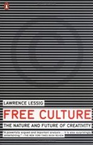

Free Culture

by Lawrence Lessig (2004)
Accessible, entertaining, rich with historical perspective, and cuts incisively to the core of modern society's conflict over intellectual property. To my mind, one of the most important books of the decade. I'd highly recommend it. And it's available for free from your iPhone's built-in ebooks installer, or as a pdf.
Rating: 10/10. Blimey.